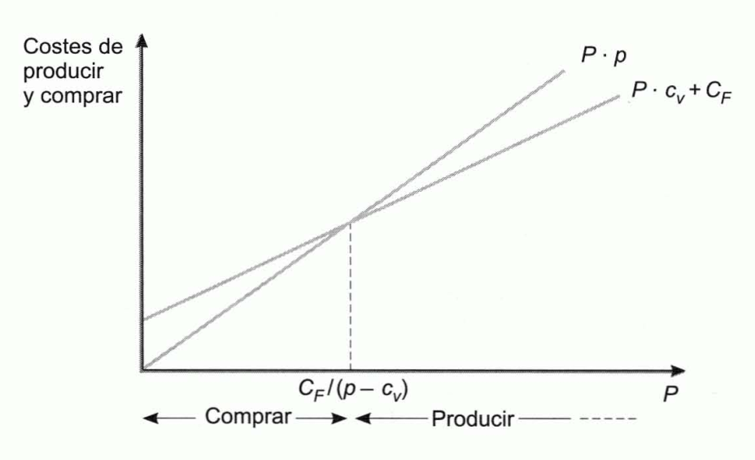
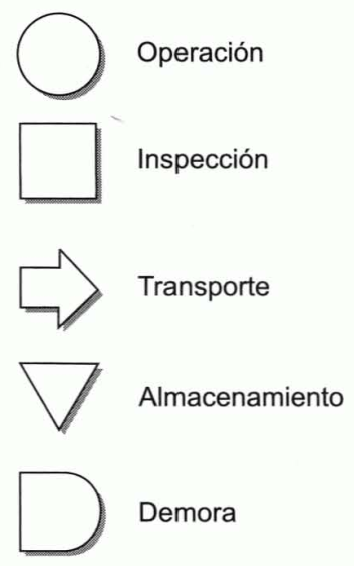
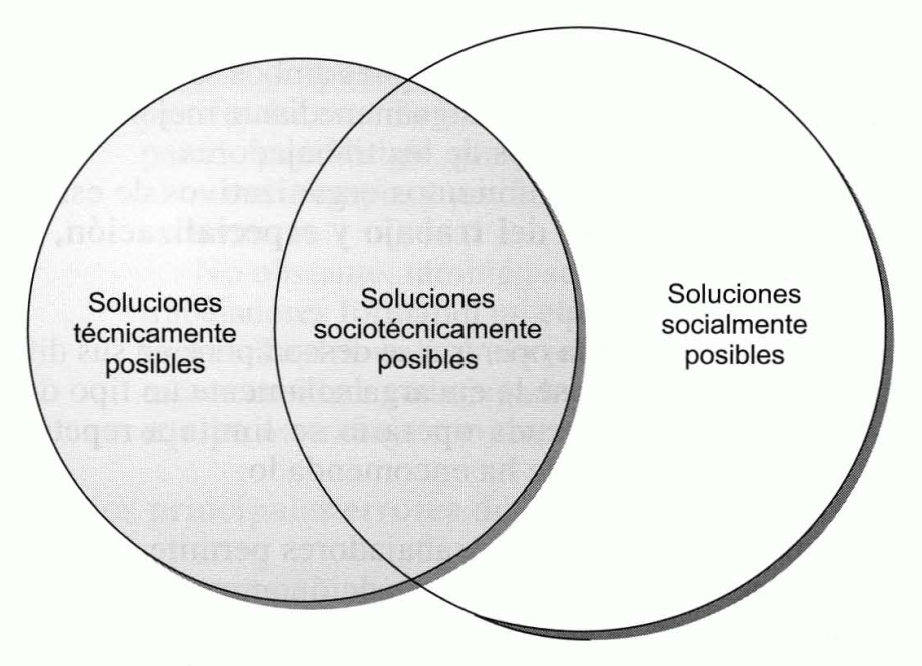
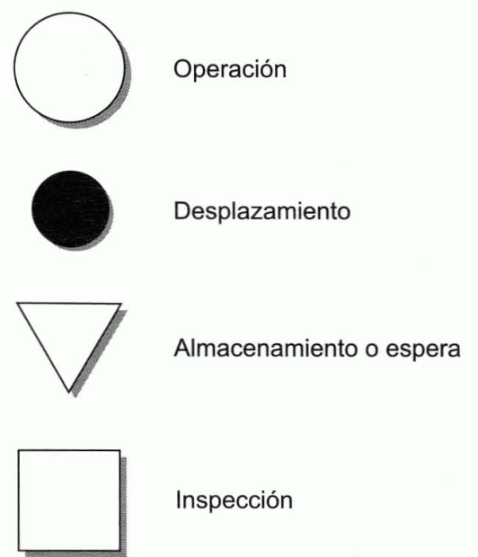

Tema 9: Elementos productivos. El proceso de producción y el factor humano
Introducción
Función productiva: consiste en el empleo de factores humanos y materiales para la elaboración de bienes y la prestación de servicios.
Dirección de la producción: proceso de toma de decisiones en el ámbito de la función productiva.
Utilidad: las empresas crean utilidad y riqueza produciendo, y las familias destruyen la utilidad y riqueza consumiendo. Existen utilidades de forma, tiempo, lugar y propiedad. Las tres últimas se crean, mediante la función de marketing, poniendo los productos a disposición de los consumidores en los momentos y lugares que éstos desean, y facilitando la transferencia de su propiedad. La utilidad de forma es la creada mediante la conversión de materias primas y otros factores de producción, en productos terminados.
A medida que aumenta la utilidad de un bien, se incrementa su valor para los consumidores y, consiguientemente, el precio que están dispuestos a pagar por él.
Diseño del producto: no es competencia exclusiva de la dirección de producción. El proceso de diseño engloba las siguientes etapas (cuando está destinado al mercado en general):
-
Se precisan estudios de investigación comercial para conocer las reacciones de los consumidores a diferentes alternativas, así como pruebas de mercado y estimaciones de las ventas potenciales y de las rentabilidades de los diferentes nuevos productos, todo lo cual concierne a la dirección de marketing.
-
La dirección de producción transforma el concepto inicial en un producto final y diseña el sistema de modo que el nuevo producto se elabore tan eficientemente como sea posible. Para que un nuevo producto resulte rentable no es suficiente que el mercado lo acepte, sino que además ha de ser producido económicamente.
La primera decisión: producir o comprar
Decisión de producir o comprar: la primera decisión que ha de plantearse ante la producción de un nuevo producto, es la posibilidad de comprar fuera el producto terminado, en estado de semielaboración o algunos de sus componentes, en lugar de producirlos en la propia empresa.
Esta decisión puede tomarse atendiendo al objetivo de minimizar costes. Así, siendo \(p\) el precio que habría que pagar por cada unidad si se adquiere fuera, \(c_{v}\) el coste variable asociado a la producción de una unidad, \(C_{F}\) los costes fijos anuales necesarios para acometer la elaboración del bien, \(P\) el número de unidades necesarias al año, interesará producir cuando:
El problema y su resolución se ha presentado en la siguiente figura. En ella se supone que el precio de adquisición es superior al coste variable unitario, si no fuera así la compra sería preferible cualquiera que fuera el valor de \(P\). El cociente \(\frac{C_{F}}{p - c_{v}}\) determina el nivel mínimo de unidades anuales necesarias para que la decisión de producción sea preferible a la de compra.
{width="4.1753554243219595in" height="2.5466076115485565in"}
Figura . Resolución gráfica del problema de producir o comprar
La dirección de la producción: objetivos y principales tipos de decisiones
Principales objetivos de la dirección de la producción: hacen referencia a los costes, la productividad, la calidad, la fiabilidad y la capacidad de adaptación. En términos generales puede decirse que el objetivo de la dirección de la producción es minimizar los costes de producción, maximizar la productividad de los factores, o ambos, cumpliendo los niveles requeridos de calidad, fiabilidad y capacidad de adaptación.
Clasificación de las decisiones tomadas en el ámbito de la producción: se pueden clasificar con arreglo a muy diversos criterios.
-
Agrupación funcional: distingue entre decisiones de proceso, de capacidad productiva, de inventarios, de recursos humanos y de calidad.
-
Agrupación que diferencia entre decisiones estratégicas y decisiones tácticas: las primeras afectan a la empresa durante un período de tiempo largo, durante el cual son irreversibles. Las decisiones tácticas son más cotidianas y su efecto se extiende sobre un período breve de tiempo.
Decisiones de proceso: son todas las que se relacionan con el diseño del proceso físico de producción. Estas decisiones requieren una gran coordinación entre el departamento de producción y el de marketing. Constituyen decisiones estratégicas la selección del tipo de proceso de producción y de los equipos productivos. Son decisiones tácticas las referentes al orden del flujo de procesos y las de mantenimiento y conservación de los equipos.
Decisiones de capacidad: tienen por objetivo que la empresa cuente con la capacidad de producción adecuada: ni excesiva ni escasa. Son decisiones estratégicas las relativas a la determinación del tamaño de las instalaciones, a su localización y al establecimiento del nivel de recursos humanos. Son tácticas las decisiones referentes a la utilización de horas extraordinarias, a la negociación de subcontratas y a la programación de las actividades.
Decisiones en materia logística: son las decisiones estratégicas relativas a la fijación del tamaño general de los almacenes y al diseño de un sistema de control de inventarios. Son tácticas las decisiones sobre cuánto y cuándo ordenar en cada pedido.
Decisiones de recursos humanos: tratan de optimizar el comportamiento de este factor en la producción. Constituyen decisiones estratégicas las referentes al diseño del puesto de trabajo y a la selección de un sistema de incentivos. Son decisiones tácticas las del control cotidiano y las de fijación de estándares de trabajo y rendimientos.
Decisiones en materia de calidad: son estratégicas las decisiones de fijación de estándares de calidad y las referentes a la determinación de la estructura organizativa que permite optimizar la calidad. Son tácticas las decisiones sobre selección de muestras de control y las que han de tomarse en el control cotidiano que se realiza para comprobar el grado de cumplimiento de los estándares.
Principales diferencias entre la elaboración de bienes y la producción de servicios
Producto: resultado del proceso productivo que pude ser un bien o un servicio.
Bien: unidad tangible que puede almacenarse, transformarse físicamente y transportarse.
Servicio: producto intangible que no es susceptible de ser almacenado ni transportado.
Diferencias en la dirección de producción de bienes y servicios:
-
Inventarios y capacidad de producción. Cuando la demanda se reduce, el productor de bienes puede seguir utilizando toda su capacidad de producción almacenando los productos que no se venden. En los períodos en los que la demanda supera su capacidad de producción puede atenderla con los bienes almacenados. Esta flexibilidad que proporcionan los inventarios no la tiene el productor de servicios, pues estos son como bienes extremadamente perecederos. Por tanto, el productor de servicios debe prever la demanda con mucha precisión. Si la demanda fuera muy inferior a su capacidad de producción, incurriría en costes innecesarios. Si, por el contrario, la demanda superara a su capacidad, no podría atender el exceso.
-
Medida de la calidad. Debido a la naturaleza intangible de los servicios, al productor le resulta difícil controlar su calidad y también es difícil que el cliente la mida. Por ello, habitualmente se considera que la reputación del productor de servicios depende más de su imagen que de la calidad de sus productos.
-
Dispersión de los centros de producción. El fabricante de bienes puede centralizar su producción en un lugar y distribuir posteriormente sus productos transportándolos a donde se encuentran los consumidores. Por el contrario, el productor de servicios está obligado a dispersar geográficamente sus instalaciones si desea atender a consumidores situados en diversos lugares.
-
Integración entre producción y marketing. En la producción de bienes suele existir cierta distancia entre el productor y el consumidor. Entre ellos median una serie de intermediarios que forman el canal de distribución. Puesto que son estos intermediarios quienes se encuentran más próximos al consumidor final, tiene gran importancia la promoción que ellos realizan de los productos de la empresa fabricante. Sin embargo, en el caso de los servicios la relación entre el cliente y el fabricante es inmediata y esa promoción la efectúan los empleados del productor. En general, la integración que existe entre las actividades de marketing y producción es mayor en la producción de servicios.
Los costes de producción y su control
Clasificación de los costes:
-
Costes variables.
-
Costes fijos:
-
Inactividad.
-
Puesta en marcha.
-
Sistemas de producción:
-
Simples: el output es solo un producto de características técnicas homogéneas.
-
Múltiple: compuesta o conjunta: se obtienen varios productos o, al menos, parte del proceso es común a varios productos.
Imputación de los costes: es de suma importancia para la distribución del beneficio del ejercicio entre los distintos productos que contribuyan a su formación y para un apropiado control de los costes. Hay dos técnicas de imputación principales:
-
Full-costing: los costes fijos se distribuyen entre los productos prorrateándolos en proporción a sus costes variables totales o a los costes de los materiales que llevan incorporados.
-
Direct costing: a cada producto \(j\) se le imputa como precio de coste solamente su coste variable. A la diferencia entre el precio de venta, \(p_{j}\), y el coste variable unitario, \(c_{v_{j}}\), se le denomina margen unitario bruto.
Al multiplicar el margen unitario bruto por las unidades físicas vendidas, \(P_{j}\), se obtiene el margen bruto total del producto:
Sumando los márgenes brutos de los diversos productos, se obtiene el margen bruto de la empresa, del que, finalmente, se deducen los costes fijos, \(C_{F}\), para determinar el margen de beneficio neto.
Costes estándares: es la forma de control de costes más importante y difundida. Suponiendo que se trata de un sistema de producción simple y denominando:
-
\(P\): cantidad de producción en unidades físicas.
-
\(F\): consumo del factor cuyo coste se desea controlar en unidades físicas.
-
\(f\): precio de cada una de las unidades físicas del factor cuyo coste se desea controlar.
-
\(s\): subíndice empleado para la previsión (o estándar).
-
\(r\): subíndice para hacer referencia al valor real o efectivo.
Se denomina desviación total, \(\text{DT}\), a la diferencia entre el coste real y el coste previsto correspondiente a la producción real:
El importe situado entre paréntesis es la desviación que existe por cada unidad de producto: se preveía consumir \(x_{s}\) unidades físicas a \(f_{s}\) u.m. cada una, y realmente se ha consumido \(x_{r}\) u.f., cada una de las cuales costó \(f_{r}\) u.m.
Causas de la desviación: la variación respecto al estándar que se ha producido en el precio del factor, y la habida en la cantidad de factor aplicado por cada unidad de producto elaborada:
- Desviación en precios o económica:
- Desviación en cantidades o técnica:
Sumando la desviación en precios y la desviación en cantidades se obtiene la desviación total.
Este análisis se realiza para cada uno de los factores de producción.
La medida de la productividad
Productividad: es la relación entre la producción de un periodo y la cantidad de recursos consumidos para alcanzarla.
Productividad global: es el cociente entre su producción total (la de todos los productos) y la totalidad de los factores utilizados para alcanzarla. La única dificultad para calcular la productividad global es que los diferentes factores y los distintos productos son heterogéneos y, por tanto, sus cantidades físicas no son sumables. Por ello, la producción total y la cantidad total de factores empleados se han de valorar en unidades monetarias. Para poder efectuar comparaciones entre la productividad de un período y la de otro, sin que las oscilaciones de los precios de los factores y de los productos influyan en los resultados, las valoraciones han de efectuarse aplicando precios constantes.
Denominando:
-
\(P_{j}\): número de unidades físicas elaboradas del producto \(j\) en período\(0\), y \(p_{j}\) a su precio unitario en ese periodo.
-
\(F_{i}\): cantidad utilizada del factor \(i\) en el periodo \(0\) (en unidades físicas), y \(f_{i}\) a su coste unitario en ese periodo.
-
\(\Delta\): variación positiva o negativa experimentada por la variable ante la que se sitúa este símbolo en el período \(1\) respecto al periodo \(0\).
Si la empresa utiliza \(m\) factores para elaborar \(n\) productos, efectuando las valoraciones con los precios \(0\) (\(p_{i}\) y \(f_{i}\)), la productividad de la empresa en ese periodo sería:
Siendo la del periodo \(1\):
Índice de productividad global, \(\text{IPG}\): coeficiente que mide por cociente la relación entre la productividad del periodo \(1\) y la del periodo \(0\).
Tasa de productividad global, \(\text{TPG}\): mide la proporción de variación de la productividad entre los dos periodos.
Índices de cantidades de Laspeyres: se utilizan para saber en qué proporción ha variado la producción de un periodo a otro, utilizando precios constantes.
- Índice de evolución de la cantidad de producción de Laspeyres:
- Índice de evolución de las cantidades empleadas de factores es:
El \(\text{IPG}\) se pude obtener a partir de los índices de Laspeyres como:
Cuando se conocen los índices de Laspeyres, el índice de productividad global pude calcularse de este modo. Posteriormente, la tasa de productividad global se calcula como diferencia entre el \(\text{IPG}\) y la unidad.
La calidad
Calidad: grado de adecuación del producto para el uso al que se le destina. La adecuada planificación y control de la calidad requiere el seguimiento de las siguientes fases:
-
Determinación de los factores de los que depende la calidad. La calidad es un atributo que tiene como peculiaridad la de medirse en relación a otros atributos. Corresponde al área de marketing investigar el mercado para determinar los factores por los que los consumidores miden la calidad del producto; estos serán los atributos relevantes.
-
Establecimiento de la forma de medir la calidad de cada uno de los factores. Los procedimientos existentes son muy numerosos y dependen del tipo de factor de que se trate.
-
Fijación de estándares de calidad. Estimar la calidad de un producto significa comparar los atributos de esa unidad con los del producto tipo o estándar, lo cual requiere definir previamente éste último con cierta precisión. La tipificación o normalización es un requiso previo al control de calidad. Normalizar significa clasificar productos en grupos homogéneos con relación a los atributos de calidad. En algunos casos es difícil o excesivamente costoso que los productos se ajusten con exactitud a una norma rígida, por lo que suelen especificarse unos límites de tolerancia.
-
Establecimiento de un programa de inspección. Es muy frecuente que resulte imposible o excesivamente costoso revisar la totalidad de las unidades de productos, por lo que se ha de recurrir a una inspección por muestreo. Este muestreo debe ser aleatorio para evitar que la arbitrariedad del inspector introduzca sesgos de selección. Dado que el control se basa en una muestra, es imposible tener la seguridad de que el tanto por ciento de unidades defectuosas es inferior al máximo tolerable o porcentaje de control, pero cabe estimar que la probabilidad de que sea aceptada una partida incumpliendo dicho porcentaje, se reduce a medida que se incrementa el tamaño de la muestra, y se acerca al 100% cuando la dimensión de la muestra se aproxima al tamaño de la partida. Por tanto, el problema es equilibrar la menor probabilidad de error con el mayor coste que el aumento de la muestra supone.
-
Determinación y corrección de las causas de la baja calidad.
Calidad total: principio de organización en el que el departamento de calidad coordina todos los esfuerzos de los demás departamentos en lo relativo a la calidad. Esta idea pone un gran énfasis en la necesidad de prever los posibles defectos y esto es algo que requiere esa coordinación de los diversos departamentos; la calidad no es solo responsabilidad del departamento de calidad: es responsabilidad de todos.
Política de cero defectos o política de acertar a la primera: aboga por la realización de los esfuerzos motivacionales precisos para elaborar bien el producto desde el principio, para no tener que corregir posteriormente los errores, dado el coste que ello supone.
Principales tipos de procesos de producción y alternativas tecnológicas
Criterios de clasificación de los procesos de producción:
-
Destino del producto: se distingue entre producción por encargo y producción para el mercado. En la producción por encargo, la empresa espera a que le soliciten un pedido para elaborar el bien o servicio, en tanto que en la producción para el mercado se produce para los consumidores en general.
-
Razón que provoca la producción: puede ser la existencia de una orden de fabricación o el mantenimiento del nivel de los inventarios, distinguiéndose así entre la producción por órdenes de fabricación y producción para almacén.
-
Grado de tipificación del producto: se distingue entre producción individualizada y producción en serie o en masa. La primera es aquella en la que cada unidad de producto responde a unas características específicas, en tanto que en la segunda todas las unidades son iguales.
-
Dimensión temporal del proceso: permite distinguir entre la producción intermitente y la continua.
La producción por encargo suele ser por órdenes de fabricación, individualizada e intermitente, y que la producción para el mercado generalmente es para almacén, en serie y continua. Sin embargo, en ocasiones se dan casos de producción:
-
Por encargo o por órdenes de fabricación que, cuando la aceptación del producto es grande, dan lugar a producción en masa o en serie y con proceso continuo.
-
Para el mercado o para almacén que se realiza individualmente y de forma intermitente, como es el caso de los productos de artesanía.
-
Que siendo de tipo continuo en casi todas las fases del proceso, individualizan una o más de ellas (generalmente las de acabado) para atender a determinados encargos u órdenes de fabricación. Esto suele suceder cuando existen varias posibilidades de combinar módulos que están normalizados.
Tecnología: combinación de capacidades, conocimientos, herramientas, máquinas, ordenadores y equipo que se utilizan en el diseño, y la distribución de bienes y servicios.
Las decisiones de selección de un tipo de proceso y de elección de una tecnología se encuentran tan interrelacionadas y se condicionan mutuamente tanto que habitualmente se toman de forma simultánea y conjunta. La tecnología elegida condiciona, además, el diseño del puesto de trabajo, por lo cual hasta hace no mucho se consideraba que éste era posterior a la selección tecnológica. Hoy, también el diseño del puesto de trabajo y la elección de la tecnología tienden a considerarse como decisiones simultáneas, bajo el denominado diseño de enfoque socio-técnico.
Las principales opciones existentes son:
-
Producción manual: el hombre proporciona tanto la fuerza como el manejo de las herramientas. Para el trabajador supone un esfuerzo físico considerable y el producto obtenido no suele ser homogéneo, pero no por ello ha de resentirse la calidad.
-
Producción mecanizada: la máquina proporciona la fuerza, pero es el hombre el que maneja los útiles y las herramientas. El trabajador no tiene que realizar tanto esfuerzo físico.
-
Producción automática: las máquinas proporcionan la fuerza y, además, controlan otras máquinas y herramientas, de forma que el hombre se limita a programar y supervisar el aparato mecánico. Un caso particular es la producción robotizada. Actualmente se puede utilizar en la producción en masa y en la individualizada.
Robot: máquina reprogramable capaz de realizar numerosas tareas que requieren la manipulación programada de materiales y herramientas. La utilización de estas máquinas permite la creación de sistemas de fabricación tan flexibles que se pueden adaptar rápidamente a la elaboración de unos productos distintos.
Sistemas CAD-CAM: las siglas CAD provienen del término anglosajón computer-aided design (diseño asistido por ordenador) y CAM de computer-aided manufacturing (fabricación asistida por ordenador). Los sistemas CAD permiten diseñar productos y partes de ellos en ordenador con mayor rapidez y con menos errores que si se hace en un papel. La función de los sistemas CAM comienza donde finaliza la de los sistemas CAD. Un sistema CAM permite al fabricante utilizar ordenadores para analizar las fases que debe seguir una máquina para elaborar un producto o una parte del mismo. Posteriormente, se transmiten al equipo de producción las instrucciones para que realice las fases adecuadas y en el orden correcto.
Tanto en la elección del tipo de proceso como en la elección de la tecnología, resulta determinante la demanda prevista. La amortización de los grandes y/o costosos equipos de producción que habitualmente son precisos para el mantenimiento de una producción mecanizada o automática, provoca unos gastos que solo se compensan con unos ingresos elevados, lo cual requiere un alto nivel de demanda.
Los bienes de equipo
Las principales decisiones que atañen a los equipos de producción son las concernientes a su selección, a la determinación de su duración a su amortización y a su mantenimiento.
Las decisiones de selección
La principal característica de los bienes de equipo es que constituyen inversiones de renovación o reemplazo, es decir, inversiones que han de renovarse al final de su duración para que la empresa pueda continuar su actividad de producción.
Si se trata de determinar el valor actual neto de la cadena de infinitas renovaciones de un equipo del tipo \(i\), que dura \(n\) periodos, siendo \(k\) el tipo de actualización:
La utilización del valor actual neto simple, sin acudir al artificio de la cadena de renovaciones, solamente es correcta cuando los diferentes equipos alternativos tienen la misma duración.
La renta anual equivalente también se pude utilizar para seleccionar bienes de equipo. La renta anual constante que es equivalente al equipo \(i\) es aquella que, teniendo su misma duración (\(n\) años), produce el mismo valor actual neto, es decir, aquella cuyo flujo de caja anual constante, \(Q_{i}'\), es tal que:
La elección entre un conjunto de equipos alternativos es un problema de selección entre proyectos de inversión mutuamente excluyentes y ha de ser tratado como tal, sin más diferencia que la de tener en cuenta que son inversiones de renovación o reemplazo y que, por ello, ha de tomarse una base temporal homogénea, se aun número finito de años o ilimitada. Por tanto, son aplicables tanto el criterio del valor actual neto como el del tipo de rendimiento interno. Además, el tipo de descuento no tiene necesariamente que ser el mismo para los dos equipo alternativos.
La duración óptima
Vida técnica de un equipo: duración potencial, es decir, aquel periodo de tiempo durante el cual puede ser útil y producir normalmente.
Duración óptima: vida económica, es decir, aquella que hace máximo el valor actual neto de la inversión del equipo.
Valor de retiro, \(V_{t}\): importe en el que se podría vender el equipo en el momento \(t\). Constituye el último flujo de caja que generaría si se le enajenara en ese instante. Es el valor que tiene el bien fuera de la empresa al cabo de \(t\) periodos.
La duración óptima de un equipo se calcula determinando el valor de \(t\) para el cual es máximo el valor actual neto, es decir, maximizar:
Sea \(n\) la vida técnica del equipo (\(n > t\)), el valor actual neto del equipo correspondiente a esta duración es:
Comparando las dos expresiones, se observa que lo que se trata de maximizar se puede expresar también del siguiente modo:
El importe \(\text{VA}N_{n}\) no depende de \(t\), por lo cual el óptimo se consigue cuando es máximo lo siguiente:
Siendo \(\text{VA}R_{t}\) el valor que tienen en el momento \(t\) los flujos de caja que podría continuar generando el equipo (valor dentro de la empresa):
En definitiva, la duración óptima es la que maximiza el valor actual de la diferencia entre el valor del bien en el exterior y su valor dentro de la empresa.
Método MAPI o método del mínimo adverso: se determina la vida óptima de un equipo bajo el principio de la minimización de los costes. Se distinguen dos tipos de costes:
-
Costes que crecen a medida que la duración del equipo es mayor, como los de mantenimiento y reparación, y los de la denominada inferioridad de servicio. El coste de la inferioridad de servicio es el coste de oportunidad en el que se incurre por utilizar un equipo más o menos obsoleto tecnológicamente en relación al más avanzado.
-
Costes que se reducen a medida que es mayor la duración del equipo, como las amortizaciones. El coste anual por amortización será tanto menor cuanto mayor sea el número de años entre los que se reparte la base amortizable total.
La duración óptima de este enfoque es aquella para la cual es mínimo el coste total, que es el resultado de sumar los costes crecientes y los decrecientes. Al coste total mínimo se le denomina mínimo adverso.
La amortización
Los bienes de equipo se deprecian (pierden valor) por estos motivos:
-
Razones físicas: como cuando una máquina se desgasta por el uso o por el mero paso del tiempo.
-
Razones técnicas: provocadas por los avances tecnológicos, hacen que las nuevas máquinas dejen obsoletas y depreciadas a las antiguas, por producir con menores costes que éstas, o con mayor calidad, etc.
-
Razones económicas: variaciones en las retribuciones de los factores y las alteraciones de la demanda. Un aumento en la retribución de un factor puede dejar obsoletos los sistemas de producción que se basaban en él y, con ello, quedar totalmente depreciados los equipos correspondientes. Muchos tipos de máquinas son adecuados para ciertos niveles de demanda, pero no para niveles superiores ni inferiores; por ello, quedan obsoletos cuando la demanda se modifica ostensiblemente.
Amortización: imputación al coste de la producción, de la depreciación experimentada por los elementos de activo fijo, una parte del cual (y generalmente importante) es la formada por los equipos de producción.
Si inicialmente un equipo vale \(V_{0}\) u.m. (desembolso inicial) y, al cabo de los \(n\) años de su duración, se vende por un valor residual igual a \(V_{r}\) u.m., la base amortizable, \(M\), que habrá de amortizarse en los \(n\) años, será:
Los principales métodos de amortización son:
- Método lineal o de cuotas fijas: se amortiza todos los años la misma cantidad. La cuota de amortización anual, \(A\), es:
- Método de los números dígitos crecientes: cada cuota es directamente proporcional a los años transcurridos desde la adquisición del bien. La cuota del primer año, \(A_{1}\), es directamente proporcional a \(1\), la del segundo, \(A_{2}\), a \(2\), la del tercero, \(A_{3}\), a \(3\), etc. La suma de los dígitos es igual a:
- Método de los números dígitos en sentido decreciente: es semejante al anterior, pero tomando la serie de los números naturales en sentido inverso. La primera cuota es directamente proporcional a \(n\), la segunda a \(n - 1\), la tercera a \(n - 2\), etc. Y la última es directamente proporcional a \(1\). Por tanto:
Una vez determinada la cuota del último año, las demás se pueden calcular del siguiente modo:
Dado que en este método las cuotas de los primeros años son mayores que las de los últimos, se trata de un procedimiento de amortización acelerada.
- Método del tanto fijo sobre una base amortizable decreciente: consiste en aplicar una proporción de amortización constante, \(t\), sobre la parte de \(V_{0}\) que queda por amortizar. Así, la cuota del primer año será:
Con ello, la parte que queda por amortizar es:
Y la cuota del segundo año será el resultado de aplicar el tanto fijo a este importe, es decir:
Tras esta segunda cuota, lo que queda por amortizar es:
Continuando de este modo, se concluye que la último cuota será:
Y que tras ello el importe que quedará por amortizar será:
La parte de \(V_{0}\) que no se ha de amortizar es el valor residual. Por tanto, la parte de \(V_{0}\) que queda por amortizar tras la última cuota ha de ser igual a \(V_{r}\):
De donde se deduce la expresión del tanto fijo \(t\):
El mantenimiento
Mantenimiento: función cuyo objetivo es minimizar el tiempo durante el cual se interrumpe el proceso de producción o su calidad resulta alterada por un mal funcionamiento de los equipos, todo ello con el menor coste posible. En esta función tiene un papel importante la tecnología, que puede automatizar parte del proceso de mantenimiento, reducir la frecuencia de las revisiones, avisar de la necesitad de una intervención, y facilitar el acceso a los componentes de la maquinaria.
-
Mantenimiento correctivo: se presenta cuando surge la avería, por lo que viene caracterizado por la incertidumbre de su aparición y por la consiguiente dificultad de planificación de las actividades.
-
Mantenimiento preventivo: tiene como objetivo reducir la probabilidad de averías, aumentar la vida útil de los equipos, y elevar el nivel de calidad de la producción. Puede ser perfectamente planificado. Tiene costes como el del personal especializado, los repuestos y la detención de actividad que puede requerir. Por ello, suele aplicarse especialmente en los equipos críticos, cuya paralización puede hacer que se detenga la producción, en los equipos de seguridad, y en los de mayor valor.
-
Mantenimiento predictivo: actúa cuando surge alguna desviación entre el comportamiento del equipo y el que se considera normal.
Decisiones estratégicas: hay dos decisiones importantes en materia de mantenimiento:
-
Contratar en el exterior el mantenimiento o tener personal e instrumentos para realizarlo. En la decisión han de influir factores como: cantidad de maquinara de la que se disponga, especialización que necesita el personal de mantenimiento, coste en que se incurre con cada parada provocada por una avería y la frecuencia de las intervenciones.
-
Centralizar el mantenimiento en un departamento o repartir el personal por plantas y talleres de producción. La centralización evita la infrautilización de recursos en unos talleres, cuando en otros existe falta de personas y medios. Sin embargo, puede ser más adecuada la descentralización cuando los equipos de los distintos talleres son muy diferentes o, por ejemplo, cuando estos se encuentran muy distantes y es primordial la rapidez de la intervención.
El análisis del flujo del proceso
Gráfico del flujo del proceso: incluye todas las fases por las que va pasando un material, especificándose, en cada una de ellas, si se trata de una operación, una inspección, un transporte, un almacenamiento o una demora, utilizando los siguientes símbolos:
{width="1.3386176727909012in" height="1.2464457567804024in"}{width="1.4412828083989502in" height="0.9336493875765529in"}
Figura . Símbolos de las fases por las que pasa un material en el gráfico del flujo del proceso
-
Operación: tarea o actividad realizada sobre el material
-
Inspección: revisión del material realizada para comprobar su cantidad o calidad.
-
Transporte: movimiento del material de un lugar a otro.
-
Almacenamiento: acumulación de los materiales a la espera de la siguiente operación.
-
Demora: retraso en la secuencia de las operaciones.
A la vista del gráfico, es posible tener una idea detallada del flujo de materiales y pensar en otras alternativas para mejorarlo:
-
¿Qué fases son realmente necesarias? En algunas ocasiones pueden eliminarse, combinarse o simplificarse algunas fases.
-
¿Quién realiza cada fase? Es posible que se pueda rediseñar algunas fases de modo que se utiliza mano de obra menos cualificada, o menos horas de trabajo, o que éste se enriquezca y se mejore la productividad o las condiciones laborales.
-
¿Dónde se realiza cada fase? A veces es posible mejorar la distribución de la planta, reduciendo las distancias.
-
¿Cuándo se ejecuta cada fase? En algunos casos se descubre que se puede evitar alguna demora o almacenamiento innecesario, o bien actividades que crean cuellos de botella retrasando la realización del conjunto.
-
¿Cómo se realiza el proceso? Es posible que se puedan utilizar mejores métodos o equipos, o que se pueda simplificar y que se consuma menos tiempo.
La atención primordial suele centrarse en la eliminación de las demoras y de los almacenamientos:
-
Las demoras se producen cuando el ritmo de entradas de una fase es superior al de las salidas de la fase anterior.
-
Los almacenamientos aparecen en el caso contrario, es decir, cuando el ritmo de salidas de una etapa es superior al flujo de entradas de la siguiente.
Al estudio del flujo de materiales debe acompañarse un análisis del flujo de información requerido por el control administrativo del proceso, realizándose éste de forma semejante a la de aquél, sin más que sustituir materiales por documentos.
La distribución de la planta
Disposición por procesos: las diversas funciones se realizan físicamente en lugares diferentes e inalterables, y los distintos productos circulan en la planta siguiendo diferentes caminos según sea el orden de su fabricación. Esta distribución resulta propia de la producción por órdenes, individualizada e intermitente.
Distribución por productos: los trabajadores y las máquinas se sitúan en diferentes puntos de una línea por la que circulan los materiales y los productos semiterminados. Las disposiciones físicas de tales líneas pueden ser diferentes para los distintos tipos de productos, siendo esta organización más adecuada que la anterior para la producción para almacén, en serie y continua.
Disposición de punto fijo: es idónea cuando resulta demasiado costosa la circulación física del producto, el cual permanece inmóvil, siendo hombres y máquinas quienes se mueven de unidad en unidad, realizando las distintas fases del proceso. En muchos de estos casos, los materiales y herramientas se colocan en círculos, estando el producto situado en el centro. Para minimizar el tiempo preciso y los costes del manejo de los materiales y herramientas, en los anillos interiores se sitúan aquellos que se usan con más frecuencia, mientras que en los externos se colocan los menos utilizados.
Disposiciones combinadas: procesos que utilizan una disposición u otra en cada fase, o que toman elementos característicos de cada disposición en las distintas etapas.
Principios en la dirección de la fuerza de trabajo
Fuerza de trabajo: factor humano en la producción.
Principios en la dirección de la fuerza de trabajo:
-
Coordinación entre el hombre y su puesto de trabajo. Es preferible optimizar el puesto de trabajo y posteriormente seleccionar a la persona más adecuada para desempeñarlo, pero también puede ser necesario amoldar los puestos de trabajo a las personas que los desempeñan.
-
Establecimiento de estándares de rendimiento. En los estándares se especifica lo que se espera que consiga el trabajador. Así, el trabajador puede autocontrolarse comparando los resultados obtenidos con los que se esperan de él.
-
Reconocimiento de los resultados obtenidos. Comparando el resultado real obtenido por cada trabajador y su estándar, se obtiene una medida de sus resultados. Cuando éstos son favorables, es preciso reconocérselo al trabajador y recompensarle mediante cualquier procedimiento.
-
Establecer unos sistemas adecuados de supervisión y control. El supervisor o capataz es un mando intermedio situado entre la dirección de la empresa y los trabajadores. Debe estar preparado tanto técnicamente como en capacidad directiva y en relaciones humanas, siendo capaz de establecer un ambiente de trabajo adecuado. Por su situación, el supervisor puede encontrarse sometido a intereses contrapuestos. Para que realice adecuadamente su función debe tener un autoridad congruente con las responsabilidades que tiene asignadas.
-
Asignar claramente las responsabilidades y tareas. La confusión en la asignación de responsabilidades y tareas o su constante alteración generan frustración y abatimiento en los trabajadores. Como resultado, se producen situaciones de baja calidad, escasa productividad y conflictos entre las personas. Lo ideal es que los distintos trabajos se describan por escrito, definiéndose las responsabilidades que comportan y las tareas que los integran, y que estas descripciones se actualicen con cierta frecuencia.
La organización del trabajo
Organización del trabajo: consiste en la síntesis de una serie de tareas o actividades para conformar un puesto de trabajo que se asigna a un trabajador o a un grupo de trabajadores, especificándose así el contenido del puesto de trabajo y las responsabilidades de quienes lo desempeñan.
El enfoque sociotécnico
El enfoque sociotécnico para la organización y diseño del trabajo consiguió su reconocimiento gracias a una serie de estudios realizados por Eric Trist y su asociados, en minas de carbón de Inglaterra. Estos investigadores llegaron a la conclusión de que las nuevas tecnologías, y la forma en que se las estaba aplicando sin tener en cuenta el sistema social, provocaban insatisfacción en el trabajo, costes y mayores necesidades de supervisión y control, en detrimento del rendimiento y de la productividad.
Sus estudios pusieron de manifiesto que toda organización productiva incorpora un sistema técnico y un sistema social que están interrelacionados y de cuyo funcionamiento conjunto depende el rendimiento del sistema global en el que se integran.
Aplicando el enfoque de sistemas, estos investigadores observaron que no es adecuado partir de un enfoque analítico y tratar de optimizar separadamente cada uno de esos subsistemas, sino que ha de partirse de una perspectiva sintética y sistemática en la que se tengan en cuenta las interrelaciones que se producen entre los dos subsistemas, y entre cada uno de ellos y el sistema global.
Cada uno de los subsistemas ofrece al otro una serie de posibilidades, pero también le impone restricciones o exigencias.
{width="3.8684339457567805in" height="2.7943350831146105in"}
Figura . Relación entre el subsistema técnico (izquierda) y el subsistema social (derecha)
La intersección de los dos círculos contiene el conjunto de soluciones que satisfacen tanto los requerimientos sociales como los de tipo técnico. La organización óptima se encontrará en algún punto de esta intersección.
En tal caso, la técnica determina que el óptimo y el sistema social ha de adaptarse a esa solución como si los hombres fueran máquinas o partes de una gran maquinaria.
Determinismo tecnológico: organización del trabajo basada en una perspectiva exclusivamente técnica, ignorando las restricciones sociales.
La Escuela de la Dirección Científica
La Escuela de la Dirección Científica se inició con los estudios realizados por Frederick W. Taylor en la Midvale Steel Company en 1882. Sus estudios fueron ampliados y mejorados por Frank y Lilian Gilbreth y Henry L. Gantt, entre otros.
En esencia, los procedimientos organizativos de esta escuela se basan en una extremada división del trabajo y especialización, con arreglo a las siguientes fases:
-
El trabajo de cada operario se descompone en diferentes operaciones.
-
A cada operario se le encarga solamente un tipo de operación.
-
Posteriormente, cada operario se limita a repetir constantemente la operación que se le ha encomendado.
La especialización de los trabajadores permite que realicen las tareas con mayor rapidez, con lo cual la producción aumenta, los costes se reducen y se eleva la retribución al mismo tiempo que los beneficios de la empresa. Es más, según Taylor, si no se benefician económicamente tanto la empresa como sus trabajadores, los métodos serán un fracaso.
Para la aplicación de lo que él denominó organización científica, Taylor estableció los siguientes principios:
-
Estudio científico del trabajo. Se trata de determinar el mejor método de trabajo realizando un estudio de los tiempos y movimientos que requiere, optimizando la secuencia de tales movimientos u orden en el que se deben realizar, y eliminando los movimientos innecesarios.
-
Selección científica, instrucción y progresivo desarrollo de los trabajadores. Los trabajadores deben ser seleccionados por su adecuación al trabajo que se les va a asignar e instruidos para llevarlo a cabo según el método establecido. Cuando se implanta un nuevo método y un trabajador no es adecuado para él, es responsabilidad de los directivos el asignarle a otro trabajo.
-
Cooperación entre los trabajadores y la dirección para incorporar los cambios de métodos y procedimientos que sean necesarios. Aunque tanto los operarios como los directivos necesitarán algún tiempo para aceptar los nuevos métodos, deben ser conscientes de que han de trabajar según principios científicos.
-
División del trabajo entre la dirección y los trabajadores. La dirección se encarga de dirigir; los trabajadores se ocupan de trabajar. Taylor justificaba esta división porque posiblemente el trabajador no esté preparado para dirigir, porque no se puede programar y ejecutar el trabajo al mismo tiempo, y por la necesaria especialización de las funciones directivas. No obstante, también señaló la necesidad de que la dirección y los trabajadores formaran un equipo de trabajo coordinado y cooperante.
Los principales errores de Taylor fueron:
-
Su excesiva abstracción y rigidez. Según él, la organización científica era una ciencia exacta y el individuo no era sino una máquina cuya única aspiración es ganar dinero. No comprendió la naturaleza humana y creó malestar y oposición en los trabajadores.
-
El exceso de especialización, que reduce las posibilidades de desarrollo de la persona y constriñe su personalidad.
-
La separación radical entre dirección y trabajo. Una persona no puede programar o ejecutar solamente, sino que siempre realiza en diversa medida ambos aspectos del trabajo.
La aplicación de los métodos de la Escuela de la Dirección Científica es posible, pero no con tanta rigidez como la preconizada por Taylor y sus seguidores.
El enfoque del enriquecimiento del puesto de trabajo
Los cinco factores de motivación en el trabajo, a los que algunos autores denominan ejes centrales del trabajo son los siguientes:
-
La variedad de las operaciones a realizar (factor \(V\))
-
La identidad de la tarea (factor \(I\)).
-
La importancia de la tarea (factor \(M\)).
-
La autonomía del trabajador (factor \(A\)).
-
La retroalimentación (factor \(R\)).
Hackman y Oldham desarrollaron un cuestionario de diagnóstico del puesto de trabajo, que permite cuantificar estos factores. Posteriormente, se mide la motivación potencial de un puesto de trabajo por el índice, diseñado también por estos autores, siguiente:
Cuando este índice es elevado, señala que existe una elevada potencialidad de motivación del trabajo en cuestión, en tanto que cuando es bajo indica que el trabajo tiene escasas posibilidades de ser motivador.
Una de las principales contribuciones de Hackman y Oldham al estudio del enriquecimiento del trabajo es la idea de que los trabajos deben estudiarse cuidadosamente para determinar su capacidad de motivación, antes de enriquecerlos. El estudio debe seguir las siguientes fases:
-
Determinar si existen problemas de falta de motivación o insatisfacción con el trabajo. Antes de enriquecer el trabajo, hay que encuestar a los trabajadores para determinar la motivación y satisfacción que tienen con sus tareas. Si el resultado es que se encuentran poco motivados, se debe pasar a la segunda fase; si no es así, se deben buscar los problemas en el sistema técnico o en el sistema global.
-
Determinar la capacidad de motivación del trabajo mediante una encuesta y la posterior medida mediante un índice como el \(\mathbf{\text{IMP}}\). Si el resultado es elevado, deben buscarse las dificultades en cuestiones que Herzberg denominada factores de mantenimiento, es decir, en factores relacionados con el puesto de trabajo, como el salario, las condiciones de trabajo y la seguridad en el empleo, pero no asociados directamente a él. Los factores asociados de forma directa al trabajo (factores motivacionales), son los anteriormente enumerados (\(V,\ I,\ M,\ A\) y \(R\)) y es de ellos de lo que depende la capacidad de motivación del trabajo.
-
Especificar los factores que provocan los problemas. Tomando las puntuaciones de cada uno de los cinco factores de motivación, se determina cuáles son los que provocan falta de satisfacción.
-
Determinar si los trabajadores están dispuestos a que se altere su puesto de trabajo. En algunos casos, los empleados no desean que se altere su trabajo, sino que prefieren seguir realizando las mismas tareas de siempre aunque les resulten poco motivadores y no les satisfagan. Las alternativas son no enriquecer el trabajo, o enriquecerlo y transferir a esos trabajadores a otros puestos.
El estudio de métodos y la medición del trabajo
Estudio de métodos y medición del trabajo: constituyen las dos áreas de lo que clásicamente se denomina estudio del trabajo, que consiste en el empleo de ciertas técnicas que permiten analizar los factores físicos que influyen en él o introducir mejores para simplificarle, con el objetivo último de aumentar la productividad a corto plazo.
El estudio de métodos de trabajo
Un estudio de los métodos de trabajo debe seguir las siguientes fases:
-
Definición de los objetivos y restricciones del estudio. El objetivo puede consistir en conseguir economías de movimientos, economías de materiales, o una mejor utilización de los medios de producción, reduciendo así los costes y aumentando la productividad.
-
Selección del enfoque del estudio. El enfoque puede consistir en un estudio de movimientos muy detallado que incluya la utilización de cámaras de vídeo para registrar las operaciones que realizan los trabajadores, o un estudio somero y rápido.
-
Informar a los trabajadores sobre el estudio que se va a realizar, que sepan los objetivos que se pretenden y el enfoque que se va a seguir. También es importante que conozcan los beneficios que pueden derivarse para ellos, y que tengan la oportunidad de plantear dudas.
-
División del trabajo en sus elementos. Se denomina elemento de un trabajo a una parte del mismo que contiene un conjunto de movimientos, actividades o tareas estrechamente relacionadas entre sí. El trabajo se divide en elementos para facilitar el análisis, pues cada elemento requerirá un método específico.
-
Estudio del método mediante gráficos. Cada elemento se estudia mediante diagramas que facilitan la comprensión del papel que desempeña el conjunto y cómo se realiza el proceso de movimientos, actividades y tareas que lo forman. Sobre los diagramas se pueden estudiar otros métodos alternativos que simplifiquen el trabajo.
-
Seleccionar un método para cada elemento de trabajo. Tras la selección comienza la implementación de los nuevos métodos, para la cual es de gran importancia que los trabajadores los acepten y que coordinen sus esfuerzos con los de la dirección de la empresa.
El tipo de diagrama que se debe utilizar depende del nivel al que se va a realizar el estudio:
-
El proceso de producción global. Su objetivo es detectar esperas, combinar o eliminar pasos superfluos y reducir desplazamientos.
-
El trabajador situado en un punto de trabajo fijo sin desplazamientos. El objetivo del estudio es simplificar el trabajo y minimizar el número de movimientos que debe realizar el operario. Los dos procedimientos clásicos para ello son los siguientes:
-
Elegir a la persona que mejor realiza la tarea y tomar su método como estándar. Los demás trabajadores deberán realizar la tarea según su método, y quienes no puedan hacerlo son trasferidos a otras tareas. Este enfoque se atribuye a Taylor.
-
Observar los movimientos de varios trabajadores realizando la misma tarea y elegir de cada operario aquellos aspectos en los que destaca. Las observaciones se realizan mediante la filmación de la tarea y la determinación de los micromovimientos analizando la tarea fotograma a fotograma. Fue ideado por los esposos Gilbreth, quienes denominaron un movimiento elemental como Therblig.
-
Una vez identificados los movimientos necesarios para realizar una tarea, se representan gráficamente:
- Diagrama de operaciones: representación de las operaciones necesarias para realizar una tarea, mediante la utilización de los símbolos de la A.S.M.E. (Sociedad Americana de Ingenieros Mecánicos):
{width="1.940009842519685in" height="2.260913167104112in"}
Figura . Símbolos de la A.S.M.E. para la representación de las operaciones en un diagrama de operaciones
-
Simograma: representación simultánea para ambas manos en la que se reflejan los movimientos que realizan y los tiempos precisos para efectuarlos. De ese modo se comprueba que se cumplen principios de economía de movimientos como que las dos manos no deben estar ociosas al mismo tiempo o que una mano no debe utilizarse como punto de sujeción ya que para ello hay herramientas especiales.
-
La interacción del trabajador con otros trabajadores. El objetivo es minimizar el tiempo ocioso y las interferencias entre trabajadores, utilizando un diagrama de actividades denominado diagrama de equipo.
-
La interacción del trabajador con la máquina. El principal objetivo es minimizar el tiempo ocioso tanto del trabajador como de la máquina. Para ello es de gran utilidad otro tipo de diagrama de actividades que es el diagrama hombre-máquina.
Diagrama de actividades: representación simultánea por orden cronológico y en una misma escala de tiempo, de las tareas que realizan los distintos trabajadores (diagrama de equipo) o el trabajador y las máquinas (diagrama hombre-máquina).
La medición del trabajo
Medición del trabajo: consiste en un conjunto de técnicas cuyo principal objetivo es determinar el tiempo requerido para realizar una tarea. Las principales técnicas son:
- Estudio de tiempos. Fue formalizado por Taylor y constituye el método cuantitativo más utilizado en la práctica. Antes de aplicarlo, se ha de dividir el trabajo en sus elementos, desarrollar un método para cada elemento, y seleccionar y entrenar a un trabajador o conjunto de trabajadores. Tras ello, comienza el estudio de tiempos con la repetida medida del tiempo que tarda cada uno de los trabajadores en realizar cada elemento del trabajo.
Se denomina tiempo observado (\(\mathbf{\text{TO}}\)) de un elemento del trabajo a la media aritmética de los tiempos medidos a los trabajadores, es decir, es lo que tarda por término medio un trabajador bien entrenado, en realizar el elemento en cuestión, sin realizar un esfuerzo anormal.
Un grado de eficiencia (\(\mathbf{\text{GE}}\)) del 100% representa un ritmo de trabajo normal. Un alto porcentaje de los trabajadores debe ser capaz de trabajar a este ritmo.
Se denomina tiempo normalizado (\(\mathbf{\text{TE}}\)) al resultado de multiplicar el tiempo observado por el grado de eficiencia. En el cálculo del tiempo normalizado se supone que el operario está trabajando constantemente, sin interrupciones debidas a necesidades personales o a contratiempos inevitables. Para tener en cuenta estas necesidades complementarias de tiempo, el tiempo estándar (\(\mathbf{T}\)) se calcula añadiendo un tiempo suplementario (\(\mathbf{\text{TS}}\)) al tiempo normalizado. Generalmente, el tiempo suplementario viene determinado como un cierto porcentaje del tiempo normalizado:
-
Tiempos predeterminados. Figuran en una relación estandarizada de movimientos básicos junto con sus tiempos de ejecución. Para utilizar la relación, se divide la actividad que se desea medir en sus movimientos básicos, a cada movimiento básico se le asigna un grado de dificultad, y con las tablas se determina el tiempo requerido para cada movimiento básico. Posteriormente, el tiempo normal de la actividad se calcula sumando los tiempos requeridos por sus movimientos básicos. El tiempo estándar se determina añadiendo un tiempo suplementario al tiempo normal.
-
Muestreo del trabajo. Consiste en realizar un gran número de observaciones directas e instantáneas de una determinada operación y registrar lo que ocurre en ese instante para determinar el porcentaje de tiempo en que la operación se encuentra en determinado estado.
Se distinguen dos estados principales: el de actividad y el de inactividad. Se basa en la idea de que el porcentaje de observaciones que registran inactividad o actividad del trabajador o máquina, es una estimación razonable del porcentaje de tiempo en que la operación se encuentra en estado de inactividad o actividad. Se requiere que el número de observaciones sea bastante elevado y que los momentos en los que se realicen se seleccionen aleatoriamente.
Sistemas de remuneración por incentivos
Se supone que un trabajador tarda \(t\) unidades de tiempo (u.t.) en realizar la tarea. Si cada u.t. de trabajo se remunera a \(s_{0}\) u.m., la remuneración del tiempo de trabajo de este trabajador será:
Si el tiempo estándar previsto para realizar esta tarea es \(T\) u.t., al efectuarla en \(t\) u.t., este trabajador le ahorra a la empresa la diferencia entre \(T\) y \(t\) u.t., por cada una de las cuales hubiera tenido que pagarle \(s_{0}\) u.m. si hubiera trabajado a ritmo normal. Para incentivarle, por cada u.t. ahorrada se le abona un incentivo igual a \(I\) u.m., de manera que la prima por tarea realizada vale:
En total, por cada tarea recibirá un salario igual a:
Hay cuatro sistemas principales de remuneración por incentivos, cuya diferencia es el valor que asigna a \(I\):
- Destajo: al trabajador se le paga un incentivo igual a la remuneración unitaria del tiempo de trabajo:
- Sistema Halsey: el valor de cada u.t. que el trabajador ahorra se reparte entre él y la empresa, de modo que:
- Sistema Rowan: la proporción que representa el incentivo unitario, \(I\), sobre el salario unitario, \(s_{0}\), es igual al que representa el tiempo efectivo de trabajo, \(t\) sobre el previsto para realizar la tarea, \(T\), es decir:
- Sistema York o con prima por pieza: la proporción que representa el incentivo, \(I\), sobre el salario unitario, \(s_{0}\), es igual a la que representa el tiempo estándar, \(T\), sobre el ahorro de tiempo, \(T - t\):
Este tipo de incentivos no siempre da lugar a aumentos de productividad debido al efecto que tienen las presiones del grupo sobre las personas cuyo desempeño es superior a la media. A menos que exista un ambiente general de competencia entre las personas, si una de ellas trabaja más rápido que las otras pude terminar encontrándose con un clima de desconfianza y hostilidad hacia ella en el grupo.